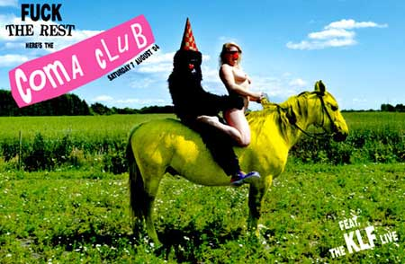

| dunst går i COMA | 7. August 2004 |
 |
|
| COMA CLUB på NIMB i Tivoli. Bernstorffsgade 5, 1577 V.(lige over for Hovedbanegården) Hvor alle vil være, hvor der opfordres til hor og stive pikke, hvor alle kloner, alle køn, alle glemte gemte møver sig ind i et eller andet opkørt/ underkørt/ nøgent... mmmm.... Dresscode: Wild and party Vær kreativ og start festen hjemmefra. Kom som outreret diva, postbud, i body paint eller som curlinghold i ens dragter. Dress to impress. Det er sjov og ballade. Designer jeans og en funky t-shirts er ikke nok. Brug din fantasi, slip hæmningerne løs and you'll fit right in… MEGET, MEGET, MEGET VIGTIG: DØREN ER KUN ÅBNE FOR INDGANG MELLEM KL. 22.00 - 24.00 (dette gælder for ALLE billetholdere) Der bliver ikke gjort nogen undtagelser! LIDT OM, HVAD DER GÅR NED... COMA CLUB byder op til forbudte trin og sender en uforskammet chokbølge gennem det københavnske natteliv. Vi vil ikke afsløre meget, men smider blot skødesløst følgende stikord på bordet... LINE UP: - THE KLF LIVE FEAT. WANDA DEE (THE ORIGINAL VOICE OF THE KLF) - DUNST GÅR I COMA med flere dunst shows hist og pist... - KENNETH BAGER - KJELD TOLSTRUP - TUE TRACK - ROSA LUX (dunst dj's) - DJUNA BARNES (dunst dj's) - CANTOMA FEAT. TANJA THULAU - KIM KEMI - SORTE SLYNGEL - LULU ROUGE'S DUB SOUND FEAT. TRENTEMØLLER ON LIVE KEYS, BUDA, DJ T.O.M. & SPECIAL GUEST STEEN JØRGENSEN (SORT SOL) - VISUALS BY FATHER MORGANA & BAGMANDEN ANDET GØGL: - SYGEPLEJERSKER & LÆGER - BLIV KATOLSK GIFT - HEST SOM DØRMAND - RAPPENDE GORILLA - ILDGØGLER - SAMBA SMØLFEORKESTER - MAGISKE MR. MOX - MANDY SIXX |
|